L Dante Guarin — Product Designer, Los Angeles.


Over 10 years designing where complex systems and real user need overlap on the Venn diagram. Adobe (Marketo), Upwork, Meroxa, Teamshares, T-Mobile.
AI products need designers who can hold the product together when the rules don't exist yet. That's been my whole career.
Incorrect password. Try again.
Prototype — password check not wired up yet.
I chase the business problem behind the design ask, not just the ask itself — it shows up in both of the case studies ahead.
Usage and behavior tell me more than what people say they want. I trust what the data shows over what a stakeholder assumes.
Good design scales. I build for the 90th company, not just the first one.
The systems I build are interconnected, meant to connect people — not just move pixels around. The customer and the business both come out ahead.